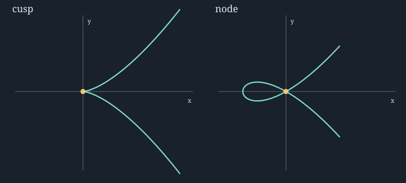

Real pictures and algebraic tangent spaces
Curves, parametrizations, and singular points
A curve can have a well-defined limiting tangent line at a point where its Zariski tangent space is the whole plane. The cusp makes that distinction visible. The node shows why a rational parametrization can also identify two different parameter values.
Move a point along the curve
For the cusp use \(x=t^2,y=t^3\), whose velocity is \((2t,3t^2)\). At \(t=0\) the velocity vanishes, although the limiting tangent line is \(y=0\). The defining equation \(f=y^2-x^3\) has gradient \((-3x^2,2y)\); at the origin its linear part vanishes, so the Zariski tangent condition imposes no restriction on a vector in \(k^2\). The tangent space is two-dimensional while the curve is one-dimensional.
For the node use \(x=t^2-1,y=t(t^2-1)\). Both \(t=1\) and \(t=-1\) map to the origin. Their velocity vectors are \((2,2)\) and \((-2,2)\), producing two different tangent directions. The Zariski tangent space at the origin is again the whole plane. The quadratic leading term \(y^2-x^2\) retains the two lines \(y=x\) and \(y=-x\); that extra object is called the tangent cone.
At \(t=0\) on the node, the point is \((-1,0)\) and velocity is \((0,-1)\). A vertical tangent is nonsingular: failure to write \(y\) as a function of \(x\) does not imply failure to write \(x\) as a function of \(y\). Singularity is detected by rank, not by a preferred graph orientation.
Fixed comparison and exact checks

The figure generator checks sampled points against their defining equations and computes the displayed geometry. The symbolic laboratory separately checks the Jacobian ranks exactly. A plotted numerical residual establishes consistency of the drawing, while the chapter's algebra establishes the general tangent-space statement.
Continue with function fields, birational geometry, and nonsingularity.